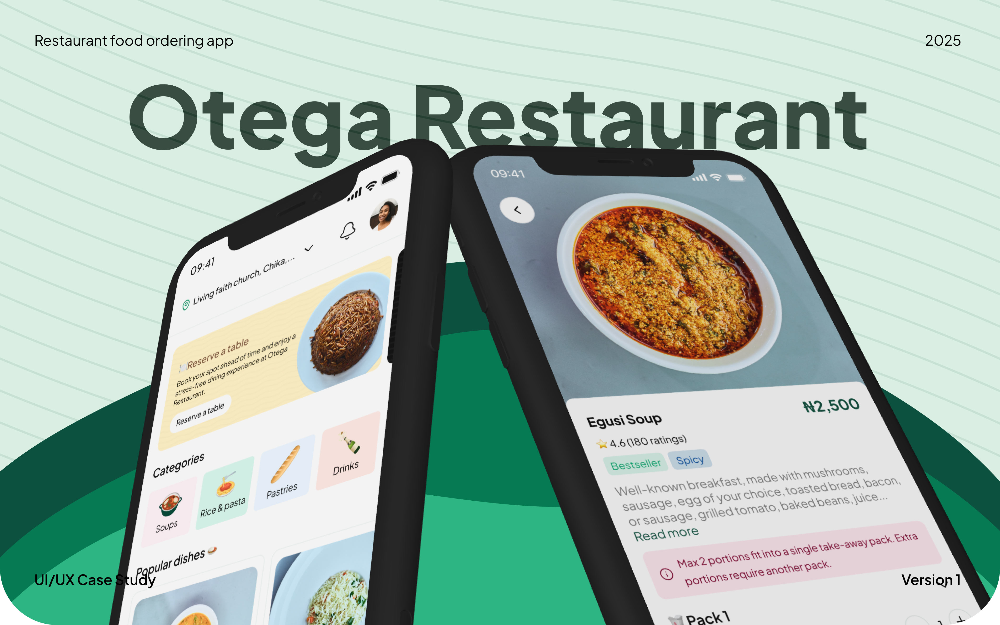
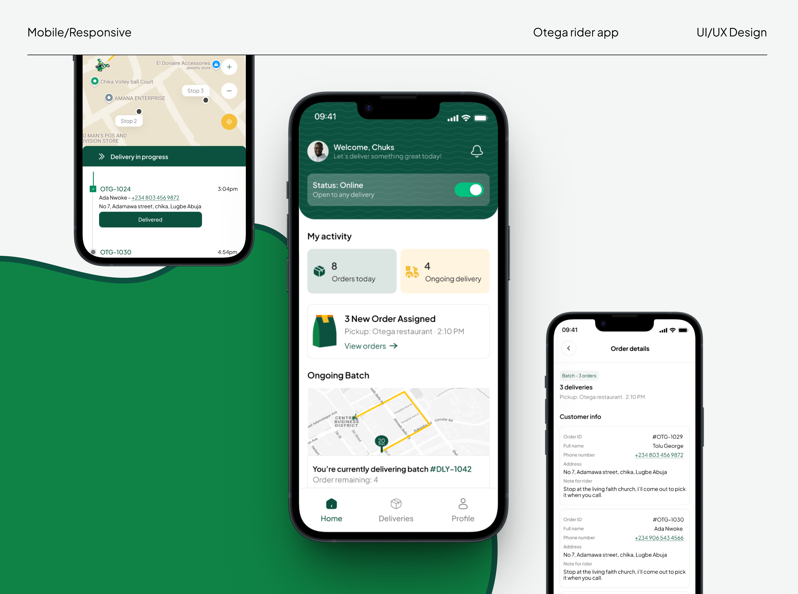
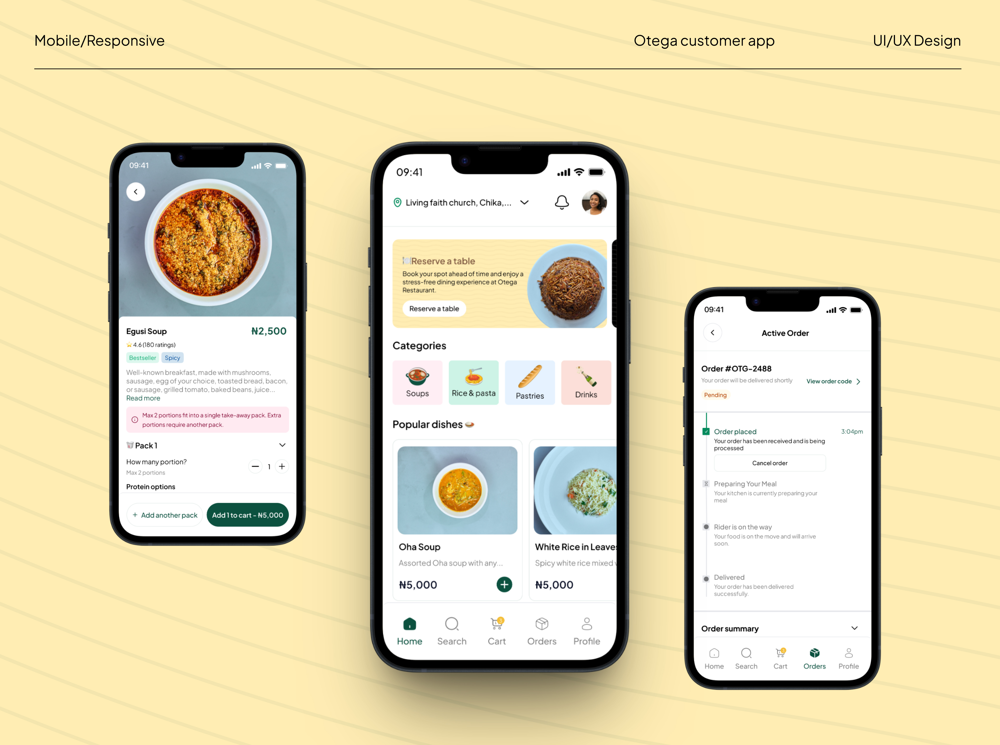
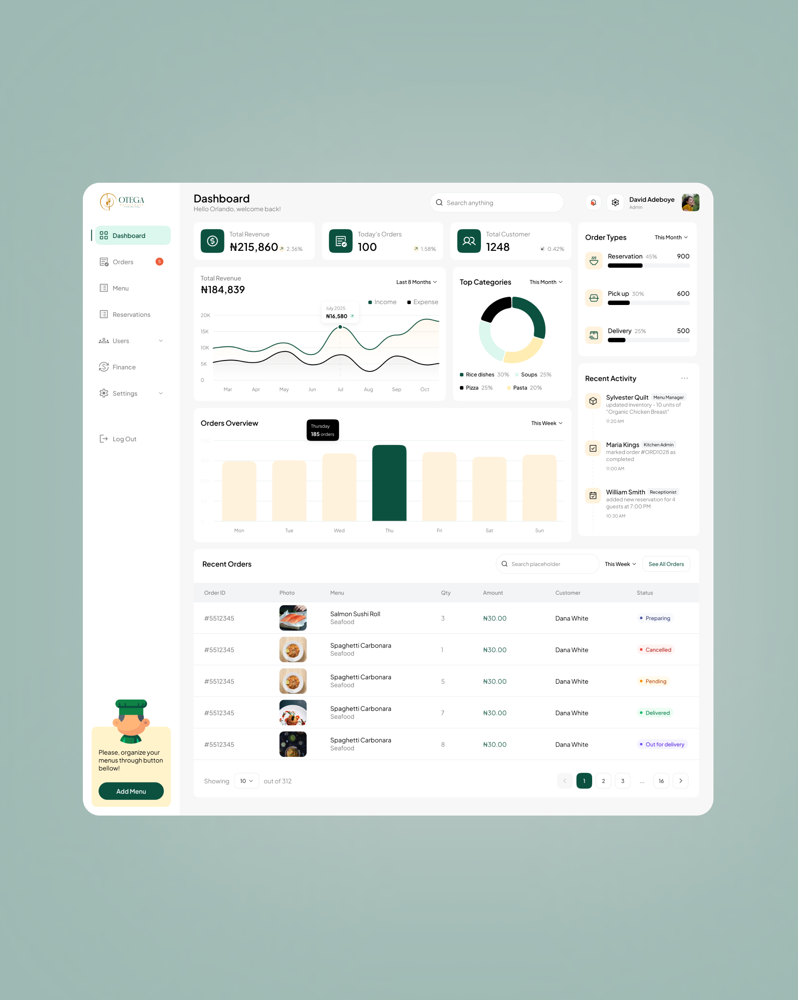
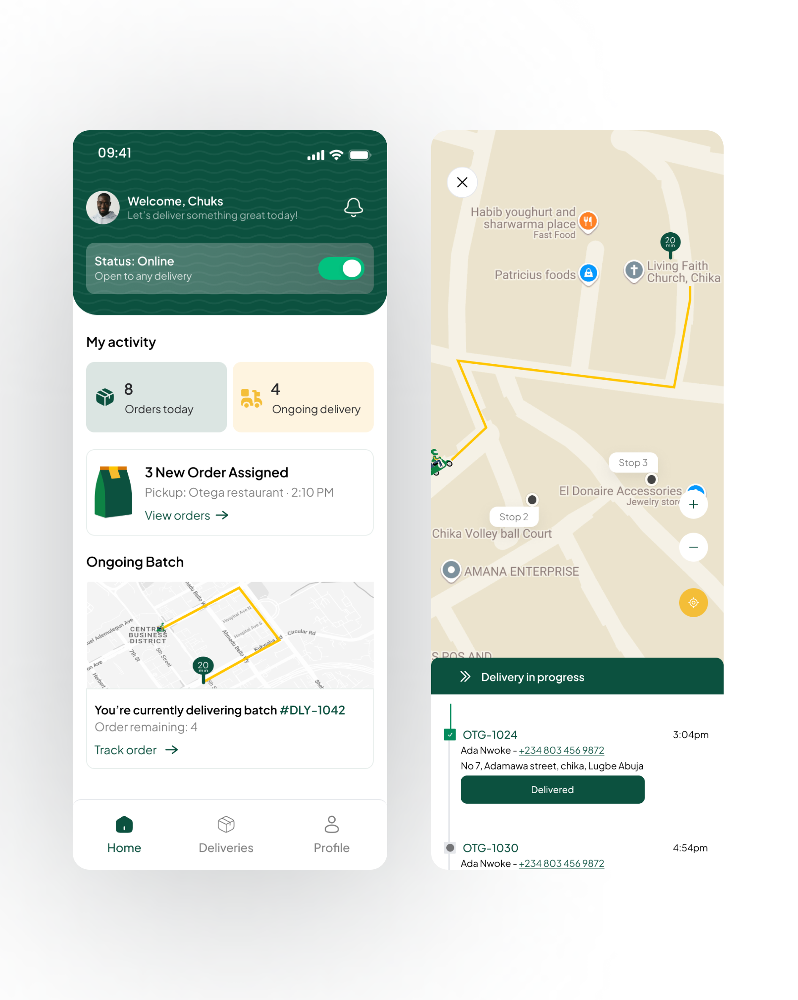
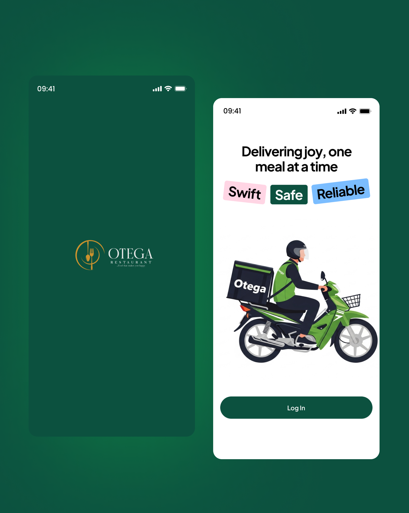

Otega Restaurant Platform
I designed Otega’s website, customer app, rider app, and admin dashboard. The time was short, so I worked from paper sketches and a moodboard, making decisions as each part of the service came together.

THE ASSIGNMENT
The restaurant needed customers to find food and place orders, riders to manage deliveries, and staff to see what was happening. I worked on the UI/UX across the website, customer app, rider app, and admin dashboard to cover those different needs.
WORKING AT SPEED
The timeline was short, and I was moving between all four experiences. I sketched flows on paper, gathered visual references in a moodboard, and used both to guide the screens as I worked.
That pace made it especially important to keep track of what each person was trying to do. An order starts with a customer, passes through the restaurant, and ends with a rider. I had to think about those steps together while designing separate interfaces for each one.
MAKING ROOM FOR THREE BRANCHES
Lugbe, Kubwa, and Wuse needed their own menus because food availability could differ by branch. I made branch selection the first step on the website, before a customer browses. In the final design, the homepage opens a branch picker that stays in place until someone chooses a location. If they try to close it, a short message explains why they need to choose first.
Choosing a branch refreshes the page with that location’s available food. For returning customers, the current branch appears in the navigation; tapping it opens the picker again, shows their current choice, and lets them switch to another branch.
The same branch logic carries into the admin dashboard. Admins can switch between locations to review available food, orders, customer activity, and revenue for each one. I also designed staff logins around location: an admin can assign a staff member to a branch, and that person sees only the information for their assigned location.
- 01Choose Lugbe, Kubwa, or Wuse before browsing.
- 02See the menu and availability for that branch.
- 03Switch branches from the navigation later.
- 01Switch between branch views.
- 02Review each branch’s orders, availability, and revenue.
- 03Give staff access to their assigned branch.
DIFFERENT PEOPLE, DIFFERENT JOBS
I gave each group a different starting point. The customer app leads with food and order status. The rider app puts assigned deliveries and progress up front. The admin dashboard brings orders and activity together, while the website introduces Otega and offers a route to order or reserve a table.
That way, the parts still belong to one service, but each screen starts with the job that matters to the person using it.
VISUAL DIRECTION
Chowdeck’s website and app were among the references I used for my moodboard. Across Otega’s screens, I carried green, yellow, and white through the work, using them differently depending on the screen. The palette helped the website, apps, and dashboard feel like parts of the same service.
The final interfaces
What that became.
The screens below show the different sides of the same service, from choosing a meal to managing an order and getting it delivered.

Rider app · assigned deliveries and progress

Customer app · browse, choose, and track an order

Admin dashboard · branch views, orders, and restaurant activity

Website · branch-specific menu, ordering, and reservations

Rider flow · home and delivery route

Rider app · splash and entry screen